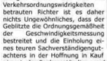
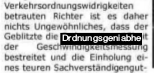

Ich habe voller Freude die Kunde von OCRmyPDF vernommen - eine Lösung, gescannte PDFs mit einer durchsuchbaren Textlage zu kombinieren. Leider muß ich nach meinen Tests zur Vorsicht raten...
Ich habe das Paket wie in diesem Artikel beschrieben installiert. Dabei traten keine Probleme auf - das machte mich zuversichtlich. Die probeweise Verarbeitung eines englischsprachigen Texts war auch sehr vertrauenerweckend.
Aber der deutsche Test zeigte die Grenzen der Lösung: Ich suchte mir im Netz der Netze


eine gescannte TIFF-Datei, wandelte diese in ein A4-PDF um und ließ die Lösung darauf los. Ergebnis: die Erkennung war nicht hundertprozentig zuverlässig: nicht jedes Vorkommen des Suchbegriffes wurde entdeckt. Das läßt sich auch sehr gut an den folgenden beiden Screenshots nachvollziehen: links das PDF im Betrachter, rechts das PDF im Betrachter: das problematische Wort wurde selektiert, dadurch wird die normalerweise unsichtbare Textlage sichtbar und man sieht, daß die Erkennung hier fehlerhaft war.Der Vollständigkeit halber sei noch hinzugefügt, daß auch das Vergrößern des Dokuments auf A3 bei der Erzeugung keine Verbesserung brachte - jetzt wurden mit dem gleichen Testfall (Suche nach gemäß) sogar noch zwei Soll-Fundstellen weniger gefunden. Auch die Optionen -c und -d halfen nicht wesentlich weiter - im Vergleich zu A4 wurde nun nur noch eine Soll-Fundstelle weniger gefunden. Das zeigt aber auch, daß man diese beiden unbedingt benutzen sollte, auch wenn sich die Verarbeitungszeit dadurch nochmals verlängert.
Noch ein Tip: Rechner mit mehreren Kernen profitieren von diesen bei der Benutzung von OCRmyPDF nur, wenn das Werkzeug mehrfach nebeneinanderher gestartet wird. Das Werkzeug an sich benutzt nur einen Kern.
Fazit: Schönes Werkzeug, allerdings sollte man sich nicht darauf verlassen, daß wirklich alle Auftreten des gesuchten Begriffs gefunden werden.


Vor 5 Jahren hier im Blog
-
Umzug Netzwerklabor abgeschlossen
24.09.2019
In meinem vorhergehenden Artikel zu diesem Thema habe ich beschrieben, wie man mit einem einfachen Bash-Skript sehr schnell einen rudimentären Router als LXC-Container aufbauen kann.
Weiterlesen...
Tags
Android Basteln C und C++ Chaos Datenbanken Docker dWb+ ESP Wifi Garten Geo Git(lab|hub) Go GUI Gui Hardware Java Jupyter Komponenten Links Linux Markdown Markup Music Numerik PKI-X.509-CA Python QBrowser Rants Raspi Revisited Security Software-Test sQLshell TeleGrafana Verschiedenes Video Virtualisierung Windows Upcoming...
Neueste Artikel
- Self-hosted Geo-Coding mit nominatim
Nachdem ich neulich eine Lösung zur Navigation in meinen Docker-Zoo holte, habe ich nunmehr nachgelegt: Für eins meiner Wochenendprojekte benötigte ich eine Möglichkeit, (inverses) Geo-Coding über eine API nutzen zu können - natürlich im besten Fall wieder self-hosted...
Weiterlesen... - Eventim scrapen als AI-Ersatz
Ich habe neulich darüber berichtet, wie ich einen weiteren Dienst mit GIS-Bezug in meinen einquartierte. Damals beschrieb ich den Grund nur nebelhaft aös "eins meiner Wochenendprojekte" - nun ist es an der Zeit zu erklären, worum es sich dabei handelte...
Weiterlesen... - Meine Umsetzung des Konzepts CircuitBreaker
Das Konzept eines CircuitBreaker ist schon lange bekannt. Ich habe mir zu Studienzwecken einen selber gebaut - eigentlich zwei: Einer ist dafür da, das Logging von gleichartigen Exceptions zu drosseln, der andere für das Entzerren von Versuchen, Ressourcen von URLs nachzuladen. Diese spezielle Variante benötigte ich für EBMap4D: Falls einer der Tile-Server ausfällt, wird ansonsten ständig versucht, die Kacheln neu herunterzuladen. Das frisst nicht nur Rechenzeit, sondern ist auch unnütz.
Weiterlesen...
Manche nennen es Blog, manche Web-Seite - ich schreibe hier hin und wieder über meine Erlebnisse, Rückschläge und Erleuchtungen bei meinen Hobbies.
Wer daran teilhaben und eventuell sogar davon profitieren möchte, muß damit leben, daß ich hin und wieder kleine Ausflüge in Bereiche mache, die nichts mit IT, Administration oder Softwareentwicklung zu tun haben.
Ich wünsche allen Lesern viel Spaß und hin und wieder einen kleinen AHA!-Effekt...
PS: Meine öffentlichen GitHub-Repositories findet man hier - meine öffentlichen GitLab-Repositories finden sich dagegen hier.